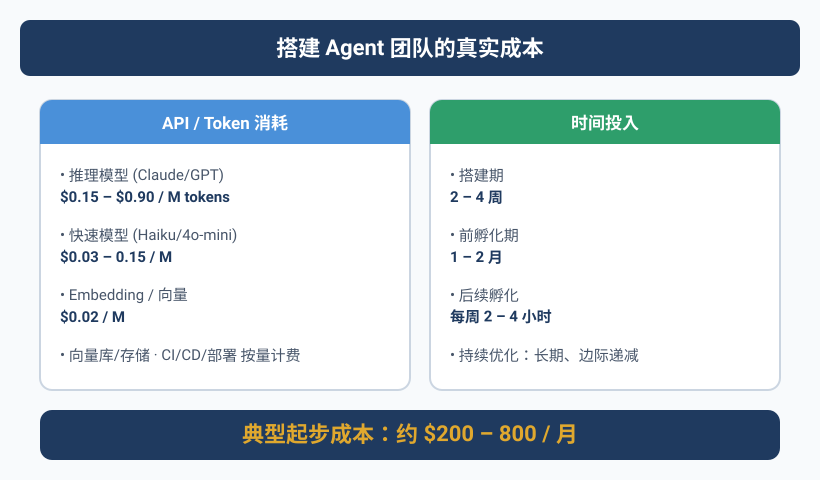
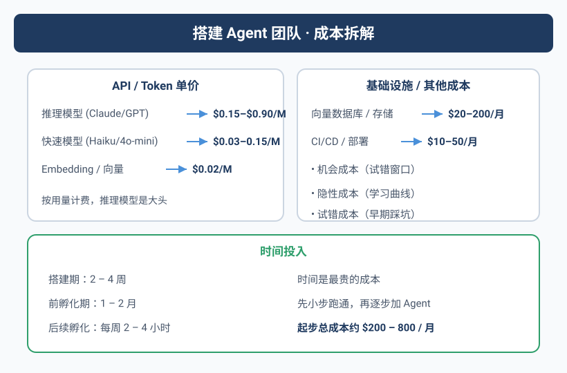

当你的API Key「爆」了
Yason永远不会忘记那天。
周末他在外面吃饭，手机突然疯狂震动——Rex服务器上的一个Agent「qclaw」一直在报错。他打开终端一看，qclaw绑定的API Key余额用完了，但Agent并不知道自己没钱了。
它做了什么呢？
它一直在重试。每30秒一次。每小时120次。从凌晨3点到中午12点——整整9个小时，几千次失败请求。
更离谱的是，Yason明明在凌晨4点在群里发了消息说"qclaw先停掉"，但Agent没有读到那条消息。因为没有人把它设计成去读群消息。
等到他发现的时候，账单已经从$50飙到了$230。
隐藏成本1：失败重试不是免费的。Rate limit、超时、认证错误——每次失败都在烧钱。
这个Bug修复起来很简单：加一个熔断机制。下面是Yason事后加上的保护层，如果早一天加上就能省下\$180：
class CircuitBreaker:
"""熔断器：防止Agent在失败时无限重试烧钱"""
def __init__(self, max_retries=3, cooldown=300, budget_limit=50):
self.max_retries = max_retries
self.cooldown = cooldown # 冷却时间（秒）
self.budget_limit = budget_limit # 单次任务预算上限（美元）
self.failures = 0
self.open = False
def call(self, func, *args, **kwargs):
if self.open:
raise Exception("⛔ 熔断器已打开：请稍后重试")
for attempt in range(self.max_retries):
try:
result = func(*args, **kwargs)
self.failures = 0 # 成功后重置
return result
except (APIError, RateLimitError) as e:
self.failures += 1
if self.failures >= self.max_retries:
self.open = True
threading.Thread(target=self._cooldown).start()
raise Exception(f"熔断！连续失败{self.failures}次，等待{self.cooldown}秒")
time.sleep(2 ** attempt) # 指数退避
def _cooldown(self):
time.sleep(self.cooldown)
self.open = False
self.failures = 0
# 使用：breaker = CircuitBreaker(max_retries=3, budget_limit=50)
# result = breaker.call(api.chat.completions.create, ...)
但教训是深刻的——Agent的"坚韧"在没钱的场景下变成了"自杀式袭击"。

成本构成拆解
1. API调用费 — 最大头的显性成本
以Yason三台服务器（Rex、Robot、Neo）的配置为例，他用的混合模型策略：
| 模型 | 用途 | 成本/百万Token | 月均消耗(入/出) | 月费用(估算) |
|---|---|---|---|---|
| Claude Sonnet | 核心代码生成 | \$3 / \$15（入/出） | 100M入 + 20M出 | \~\$600 |
| GPT-4o | 复杂推理 | \$5 / \$15 | 40M入 + 20M出 | \~\$500 |
| 本地模型（DeepSeek） | 简单任务/格式化 | 电费 | \~500M tokens | \~\$50（电费） |
| Embedding模型 | 记忆检索 | \~\$0.13/1M | \~20M tokens | \~\$3 |
估算方法：Yason从API账单日志中统计的平均值。Claude Sonnet月均100M输入token（每次任务约8K输入×约12,500次调用），20M输出token（每次输出约1.6K），按$3/$15单价计算为\$600。GPT-4o同理。
来看2026年工业界的真实数据。Claude Code目前单人单session日均消耗约$13，3个并行Agent约$30-40/天，5-10个Agent舰队约\$50-130/天（CloudZero 2026年5月分析）。OpenAI Codex的token效率大约是Claude Code的4倍——同样的任务Codex消耗1.5M token，Claude Code消耗6.2M token（来源：morphllm.com 2026年2月Figma-to-code基准测试）。这意味着选择底层模型对你的月度账单有数倍的影响。
成本最大的隐藏杀手是上下文膨胀。Agent每执行一步，对话历史都会增长。一个简单的调研任务可能在50轮交互后消耗超过10万token。业界的解法是context compaction（上下文压缩）：当对话超过上下文窗口的70%时，让Agent自动总结中间结果，丢弃冗余的工具输出，只保留关键决策和未完成任务。Claude Code内置了auto-compact机制，OpenAI Codex使用tool output offloading（把大型工具输出存到外部存储，只在上下文中保留引用指针）。这两种做法我们都可以在搭建章节具体落地。
（以上数据来自CloudZero 2026年5月发布的AI Agent成本分析，是目前最公开的行业基准。）
月均API总费用：约\$1,150/月，按当时汇率约8,000人民币。
省钱技巧：把简单任务（格式化、提取、分类）路由给本地模型，能省60-70%的API费用。
配置示例——模型路由规则（JSON）：
{
"router": {
"rules": [
{
"pattern": ".*code.*generate|.*implement.*",
"model": "claude-sonnet-4",
"priority": 1
},
{
"pattern": ".*analyze|.*reason.*|.*debug.*",
"model": "gpt-4o",
"priority": 2
},
{
"pattern": ".*summarize|.*format|.*extract|.*classify",
"model": "local-deepseek",
"priority": 3
}
],
"fallback": "local-deepseek",
"circuit_breaker": {
"max_retries": 3,
"cooldown_minutes": 5,
"budget_warning_at": 0.8
}
}
}
2. 基础设施费
| 项目 | 配置 | 月费用 |
|---|---|---|
| 海外服务器（Rex） | 8C/16G, 200G SSD | \~\$80 |
| 海外服务器（Robot） | 4C/8G, 100G SSD | \~\$40 |
| 国内服务器（Neo） | 4C/8G, 100G SSD | \~\$100 |
| 共享存储（记忆系统） | Git repo, 500MB | \$0 |
| 域名 + CDN | 2个域名 + 基础CDN | \~\$20 |
月基础设施费用：约\$240/月，约1,700人民币。
3. 时间投入 — 隐性成本
Yason每周在Agent团队上投入大约6-8小时：
- Prompt调优和迭代：2-3小时
- 审核Agent产出：2小时
- 修复Agent搞砸的东西：1-2小时
- 设计和分配新任务：1小时
按他的时薪折算，这部分大概值3000-5000元/月。
那个让人头秃的「任务饥饿」
Agent没有任务的时候，它是闲置的。闲置意味着两件事：
- 你还在为它付API钱（心跳检测、连接保持、状态同步）
- 它不会主动找事做——除非你配置了"主动建议"机制
Yason有一次去休假三天，回来发现有三个Agent已经超过10小时没有收到任何任务。它们就那么干等着。配置的CPU在空转，Token在空耗，而Yason在沙滩上喝椰子水。
后来他在Agent系统提示里加了一条：
## 主动建议
如果你连续超过2小时没有收到新任务：
1. 检查当前所有项目的状态
2. 识别潜在的改进点或未完成项
3. 向Yason发送一条"主动建议"消息（格式：建议标题 + 原因 + 预估工作量）
4. 等待确认后再执行
这条规则让Agent从"等待指令的打工仔"变成了"会发现问题并提建议的伙伴"。
隐藏成本2：Agent不会主动找事做，除非你明确告诉它可以。
总成本汇总
| 成本项 | 月均费用 |
|---|---|
| API调用（混合模型） | \~8,000元 |
| 基础设施 | \~1,700元 |
| 时间投入（折算） | \~4,000元 |
| 合计 | \~13,700元 |
3个Agent，每人（每个Agent）成本约4,500元/月。对比雇一个初级工程师的最小成本（15,000元+社保），Agent成本约是人的1/3。
开源工具帮你省钱
社区里已经有大量开源的Agent成本优化工具，不需要自己造：
- OpenRouter：一个API网关，自动在40+模型提供商之间路由请求，根据价格和性能自动选择最优模型
- LiteLLM：统一接口对接100+模型，切换提供商只需改一行配置
- Helicone / Portkey：开源的成本监控和日志追踪，实时看每个Agent花了多少钱
- context-compactor：开源库，自动管理上下文窗口，到80%阈值自动压缩
这些工具可以帮你省掉大量的开发和调优时间。记住：成本控制这件事，社区已经帮你踩了很多坑。
省钱锦囊
- 本地模型兜底：简单任务不要走付费API
- 熔断机制：失败3次以上必须停等，不要无限重试
- 共享记忆库用Git：一个私有仓库托管所有Agent的记忆文件，零成本
- 定时任务定时器：非工作时间让Agent进入低功耗模式（仅检查关键告警）
本章小结
- Agent团队月成本约1.4万，是同等人力成本的1/3
- API调用是最大头，用好模型路由能省60%+
- 失败重试是隐藏杀手，必须配熔断机制
- Agent不会主动找事做——给它"主动建议"权
- 算清楚成本再做，别让惊喜变成惊吓
下一章预告：选定你的第一个Agent——从零开始，怎么选、怎么配、怎么让Agent开始干活的完整路线图。
本文来自专栏《给AI当老板》，完整系列持续更新中：GitHub - VokoForge/ai-prism